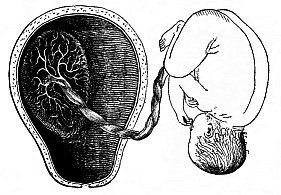

THE EVOLUTION OF MAN
Volume I
CHAPTER XV
FŒTAL MEMBRANES AND CIRCULATION
Among the many interesting phenomena that we have
encountered in the course of human embryology, there is an especial
importance in the fact that the development of the human body
follows from the beginning just the same lines as that of the other
viviparous mammals. As a fact, all the embryonic peculiarities that
distinguish the mammals from other animals are found also in man;
even the ovum with its distinctive membrane (zona pellucida,
Fig. 14) shows the same
typical

Fig. 179—Human
embryos from the second to the fifteenth week, seen from the
left, the curved back turned towards the right. (Mostly from
Ecker.) II of fourteen days. III of three weeks. IV of four
weeks. V of five weeks. VI of six weeks. VII of seven weeks. VIII
of eight weeks. XII of twelve weeks. XV of fifteen weeks. |
[ 157 ]
structure in all mammals (apart from the older
oviparous monotremes). It has long since been deduced from the
structure of the developed man that his natural place in the animal
kingdom is among the mammals. Linné (1735) placed him in
this class with the apes, in one and the same order
(primates), in his Systema Naturæ. This
position is fully confirmed by comparative embryology. We see that
man entirely resembles the higher mammals, and most of all the
apes, in embryonic development as well as in anatomic structure.
And if we seek to understand this ontogenetic agreement in the
light of the biogenetic law, we find that it proves clearly and
necessarily the descent of man from a series of other mammals, and
proximately from the primates. The common origin of man and the
other mammals from a single ancient stem-form can no longer be
questioned; nor can the immediate blood-relationship of man and the
ape.
The essential agreement in the whole bodily form and inner
structure is still visible in the embryo of man and the other
mammals at the late stage of development at which the mammal-body
can be recognised as such. But at a somewhat earlier stage, in
which the limbs, gill-arches, sense-organs, etc., are already
outlined, we cannot yet recognise the mammal embryos as such, or
distinguish them from those of birds and reptiles. When we consider
still earlier stages of development, we are unable to discover any
essential difference in bodily structure between the embryos of
these higher vertebrates and those of the lower, the amphibia and
fishes. If, in fine, we go back to the construction of the body out
of the four germinal layers, we are astonished to perceive that
these four layers are the same in all vertebrates, and everywhere
take a similar part in the building-up of the fundamental organs of
the body. If we inquire as to the origin of these four secondary
layers, we learn that they always arise in the same way from the
two primary layers; and the latter have the same significance in
all the metazoa (i.e., all animals except the unicellulars).
Finally, we see that the cells which make up the primary germinal
layers owe their origin in every case to the repeated cleavage of a
single simple cell, the stem-cell or fertilised ovum.
 Fig.
180—Very young human embryo of the fourth week,
one-fourth of an inch long (taken from the womb of a suicide eight
hours after death). (From Rabl.) n nasal pits,
a eye, u lower jaw, z arch of hyoid bone,
k3 and k4 third and fourth
gill-arch, h heart; s primitive segments, vg
fore-limb (arm), hg hind-limb (leg), between the two the
ventral pedicle.
Fig.
180—Very young human embryo of the fourth week,
one-fourth of an inch long (taken from the womb of a suicide eight
hours after death). (From Rabl.) n nasal pits,
a eye, u lower jaw, z arch of hyoid bone,
k3 and k4 third and fourth
gill-arch, h heart; s primitive segments, vg
fore-limb (arm), hg hind-limb (leg), between the two the
ventral pedicle. |
It is impossible to lay too much stress on this remarkable
agreement in the chief embryonic features in man and the other
animals. We shall make use of it later on for our monophyletic
theory of descent—the hypothesis of a common descent of man
and all the metazoa from the gastræa. The first rudiments of
the principal parts of the body, especially the oldest organ, the
alimentary canal, are the same everywhere; they have always the
same extremely simple form. All the peculiarities that distinguish
the various groups of animals from each other only appear gradually
in the course of embryonic development; and the closer the relation
of the various groups, the later they are found. We may formulate
this phenomenon in a definite law, which may in a sense be regarded
as an appendix to our biogenetic law. This is the law of the
ontogenetic connection of related animal forms. It runs: The closer
the
[ 158 ]
relation of two fully-developed animals in respect
of their whole bodily structure, and the nearer they are connected
in the classification of the animal kingdom, the longer do their
embryonic forms retain their identity, and the longer is it
impossible (or only possible on the ground of subordinate features)
to distinguish between their embryos. This law applies to all
animals whose embryonic development is, in the main, an hereditary
summary of their ancestral history, or in which the original form
of development has been faithfully preserved by heredity. When, on
the other hand, it has been altered by cenogenesis, or disturbance
of development, we find a limitation of the law, which increases in
proportion to the introduction of new features by adaptation (cf.
Chapter I, pp. 4–6). Thus the apparent exceptions to the law
can always be traced to cenogenesis.
 Fig.
181—Human embryo of the middle of the fifth week,
one-third of an inch long. (From Rabl.) Letters as in Fig.
180, except sk curve of skull, ok upper jaw,
hb neck-indentation.
Fig.
181—Human embryo of the middle of the fifth week,
one-third of an inch long. (From Rabl.) Letters as in Fig.
180, except sk curve of skull, ok upper jaw,
hb neck-indentation. |
When we apply to man this law of the ontogenetic connection of
related forms, and run rapidly over the earliest stages of human
development with an eye to it, we notice first of all the
structural identity of the ovum in man and the other mammals at the
very beginning (Figs. 1, 14). The human ovum possesses all the
distinctive features of the ovum of the viviparous mammals,
especially the characteristic formation of its membrane (zona
pellucida), which clearly distinguishes it from the ovum of all
other animals. When the human fœtus has attained the age of
fourteen days, it forms a round vesicle (or “embryonic
vesicle”) about a quarter of an inch in diameter. A thicker
part of its border forms a simple sole-shaped embryonic shield
one-twelfth of an inch long (Fig.
133). On its dorsal side we find in the middle line the
straight medullary furrow, bordered by the two parallel dorsal or
medullary swellings. Behind, it passes by the neurenteric canal
into the primitive gut or primitive groove. From this the folding
of the two cœlom-pouches proceeds in the same way as in the
other mammals (cf. Fig. 96, 97). In the middle of the sole-shaped
embryonic shield the first primitive segments immediately begin to
make their appearance. At this age the human embryo cannot be
distinguished from that of other mammals, such as the hare or
dog.
A week later (or after the twenty-first day) the human embryo
has doubled its length; it is now about one-fifth of an inch long,
and, when seen from the side, shows the characteristic bend of the
back, the swelling of the head-end, the first outline of the three
higher sense-organs, and the rudiments of the gill-clefts, which
pierce the sides of the neck (Fig. 179, III). The allantois has
grown out of the gut behind. The embryo is already entirely
enclosed in the amnion, and is only connected in the middle of the
belly by the vitelline duct with the embryonic vesicle, which
changes into the yelk-sac. There are no extremities or limbs at
this stage, no trace of arms or legs. The head-end has been
strongly differentiated from the tail-end; and the first outlines
of the cerebral vesicles in front, and the heart below, under the
fore-arm, are already more or less clearly seen. There is as yet no
real face. Moreover, we seek in vain at this stage a special
character that may distinguish the human embryo from that of other
mammals.
A week later (after the fourth week, on the twenty-eighth to
thirtieth day of development) the human embryo has
[ 159 ]

Fig. 182—Median
longitudinal section of the tail of a human embryo, two-thirds
of an inch long. (From Ross Granville Harrison.) Med
medullary tube, Ca.fil caudal filament, ch chorda,
ao caudal artery, V.c.i caudal vein, an anus,
S.ug sinus urogenitalis. |
reached a length of about one-third of an inch (Fig
179 IV). We can now clearly distinguish the head with its various
parts; inside it the five primitive cerebral vesicles (fore-brain,
middle-brain, intermediate-brain, hind-brain, and after-brain);
under the head the gill-arches, which divide the gill-clefts; at
the sides of the head the rudiments of the eyes, a couple of pits
in the outer skin, with a pair of corresponding simple vesicles
growing out of the lateral wall of the fore-brain (Figs. 180, 181
a). Far behind the eyes, over the last gill-arches, we see a
vesicular rudiment of the auscultory organ. The rudimentary limbs
are now clearly outlined—four simple buds of the shape of
round plates, a pair of fore (vg) and a pair of hind legs
(hg), the former a little larger than the latter. The large
head bends over the trunk, almost at a right angle. The latter is
still connected in the middle of its ventral side with the
embryonic vesicle; but the embryo has still further severed itself
from it, so that it already hangs out as the yelk-sac. The hind
part of the body is also very much curved, so that the pointed
tail-end is directed towards the head. The head and face-part are
sunk entirely on the still open breast. The bend soon increases so
much that the tail almost touches the forehead (Fig. 179 V.; Fig.
181). We may then distinguish three or four special curves on the
round dorsal surface—namely, a skull-curve in the region of
the second cerebral vesicle, a neck-curve at the beginning of the
spinal cord, and a tail-curve at the fore-end. This pronounced
curve is only shared by man and
[ 160 ]
the higher classes of vertebrates (the amniotes); it
is much slighter, or not found at all, in the lower vertebrates. At
this age (four weeks) man has a considerable tail, twice as long as
his legs. A vertical longitudinal section through the middle plane
of this tail (Fig. 182) shows that the hinder end of the spinal
marrow extends to the point of the tail, as also does the
underlying chorda (ch), the terminal continuation of the
vertebral column. Of the latter, the rudiments of the seven
coccygeal (or lowest) vertebræ are visible—thirty-two
indicates the third and thirty-six the seventh of these. Under the
vertebral column we see the hindmost ends of the two large
blood-vessels of the tail, the principal artery (aorta
caudalis or arteria sacralis media, Ao), and the
principal vein (vena caudalis or sacralis media).
Underneath is the opening of the anus (an) and the
urogenital sinus (S.ug). From this anatomic structure of the
human tail it is perfectly clear that it is the rudiment of an
ape-tail, the last hereditary relic of a long hairy tail, which has
been handed down from our tertiary primate ancestors to the present
day.
 Fig.
183—Human embryo, four weeks old, opened on the
ventral side. Ventral and dorsal walls are cut away, so as to show
the contents of the pectoral and abdominal cavities. All the
appendages are also removed (amnion, allantois, yelk-sac), and the
middle part of the gut. n eye, 3 nose, 4 upper
jaw, 5 lower jaw, 6 second, 6'' third
gill-arch, ov heart (o right, o' left auricle;
v right, v' left ventricle), b origin of the
aorta, f liver (u umbilical vein), e gut (with
vitelline artery, cut off at a'), j' vitelline vein,
m primitive kidneys, t rudimentary sexual glands,
r terminal gut (cut off at the mesentery z), n
umbilical artery, u umbilical vein, 9 fore-leg,
9' hind-leg. (From Coste.)
Fig.
183—Human embryo, four weeks old, opened on the
ventral side. Ventral and dorsal walls are cut away, so as to show
the contents of the pectoral and abdominal cavities. All the
appendages are also removed (amnion, allantois, yelk-sac), and the
middle part of the gut. n eye, 3 nose, 4 upper
jaw, 5 lower jaw, 6 second, 6'' third
gill-arch, ov heart (o right, o' left auricle;
v right, v' left ventricle), b origin of the
aorta, f liver (u umbilical vein), e gut (with
vitelline artery, cut off at a'), j' vitelline vein,
m primitive kidneys, t rudimentary sexual glands,
r terminal gut (cut off at the mesentery z), n
umbilical artery, u umbilical vein, 9 fore-leg,
9' hind-leg. (From Coste.) |
 Fig.
184—Human embryo, five weeks old, opened from the
ventral side (as in Fig. 183). Breast and belly-wall and liver are
removed. 3 outer nasal process, 4 upper jaw, 5
lower jaw, z tongue, v right, v' left
ventricle of heart, o' left auricle, b origin of
aorta, b', b'', b''' first, second, and third aorta-arches,
c, c', c'' vena cava, ae lungs (y pulmonary
artery), e stomach, m primitive kidneys (j
left vitelline vein, s cystic vein, a right vitelline
artery, n umbilical artery, u umbilical vein),
x vitelline duct, i rectum, 8 tail, 9
fore-leg, 9' hind-leg. (From Coste.)
Fig.
184—Human embryo, five weeks old, opened from the
ventral side (as in Fig. 183). Breast and belly-wall and liver are
removed. 3 outer nasal process, 4 upper jaw, 5
lower jaw, z tongue, v right, v' left
ventricle of heart, o' left auricle, b origin of
aorta, b', b'', b''' first, second, and third aorta-arches,
c, c', c'' vena cava, ae lungs (y pulmonary
artery), e stomach, m primitive kidneys (j
left vitelline vein, s cystic vein, a right vitelline
artery, n umbilical artery, u umbilical vein),
x vitelline duct, i rectum, 8 tail, 9
fore-leg, 9' hind-leg. (From Coste.) |
It sometimes happens that we find even external relics of this
tail growing. According to the illustrated works of
[ 161 ]
Surgeon-General Bernhard Ornstein, of Greece, these
tailed men are not uncommon; it is not impossible that they gave
rise to the ancient fables of the satyrs. A great number of such
cases are given by Max Bartels in his essay on “Tailed
Men” (1884, in the Archiv für Anthropologie, Band
XV), and critically examined. These atavistic human tails are often
mobile; sometimes they contain only muscles and fat, sometimes also
rudiments of caudal vertebræ. They have a length of eight to
ten inches and more. Granville Harrison has very carefully studied
one of these cases of “pigtail,” which he removed by
operation from a six months old child in 1901. The tail moved
briskly when the child cried or was excited, and was drawn up when
at rest.
 Fig.
185—The head of Miss Julia Pastrana. (From a
photograph by Hintze.)
Fig.
185—The head of Miss Julia Pastrana. (From a
photograph by Hintze.) |
 Fig. 186—Human ovum of twelve to thirteen days (?).
(From Allen Thomson.) 1. Not opened. 2. Opened and
magnified. Within the outer chorion the tiny curved fœtus
lies on the large embryonic vesicle, to the left above.
Fig. 186—Human ovum of twelve to thirteen days (?).
(From Allen Thomson.) 1. Not opened. 2. Opened and
magnified. Within the outer chorion the tiny curved fœtus
lies on the large embryonic vesicle, to the left above. |
 Fig.
187—Human ovum of ten days. (From Allen
Thomson.) Opened; the small fœtus in the right half,
above.
Fig.
187—Human ovum of ten days. (From Allen
Thomson.) Opened; the small fœtus in the right half,
above.
Fig. 188—Human fœtus of ten
days, taken from the preceding ovum, magnified, a
yelk-sac, b neck (the medullary groove already closed),
c head (with open medullary groove), d hind part (with
open medullary groove), e a shred of the amnion. |
 Fig.
189—Human ovum of twenty to twenty-two days. (From
Allen Thomson.) Opened. The chorion forms a spacious
vesicle, to the inner wall of which the small fœtus (to the
right above) is attached by a short umbilical cord.
Fig.
189—Human ovum of twenty to twenty-two days. (From
Allen Thomson.) Opened. The chorion forms a spacious
vesicle, to the inner wall of which the small fœtus (to the
right above) is attached by a short umbilical cord.
Fig. 190—Human fœtus of
twenty to twenty-two days, taken from the preceding ovum,
magnified. a amnion, b yelk-sac, c lower-jaw
process of the first gill-arch, d upper-jaw process of same,
e second gill-arch (two smaller ones behind). Three
gill-clefts are clearly seen. f rudimentary fore-leg,
g auditory vesicle, h eye, i heart. |
In the opinion of some travellers and anthropologists, the
atavistic tail-formation is hereditary in certain isolated tribes
(especially in south-eastern Asia and the archipelago), so that we
might speak of a special race or “species” of tailed
men
[ 162 ]
(Homo caudatus). Bartels has “no doubt
that these tailed men will be discovered in the advance of our
geographical and ethnographical knowledge of the lands in
question” (Archiv für Anthropologie, Band XV, p.
129).

Fig. 191—Human
embryo of sixteen to eighteen days. (From Coste.)
Magnified. The embryo is surrounded by the amnion, (a), and
lies free with this in the opened embryonic vesicle. The belly is
drawn up by the large yelk-sac (d), and fastened to the
inner wall of the embryonic membrane by the short and thick pedicle
(b). Hence the normal convex curve of the back (Fig. 190) is
here changed into an abnormal concave surface. h heart,
m parietal mesoderm. The spots on the outer wall of the
serolemma are the roots of the branching chorion-villi, which are
free at the border. |
When we open a human embryo of one month
(Fig. 183), we find the alimentary canal formed in the
body-cavity, and for the most part cut off from the embryonic
vesicle. There are both mouth and anus apertures. But the
mouth-cavity is not yet separated from the nasal cavity, and the
face not yet shaped. The heart shows all its four sections; it is
very large, and almost fills the whole of the pectoral cavity (Fig.
183 ov). Behind it are the very small rudimentary lungs. The
primitive kidneys (m) are very large; they fill the greater
part of the abdominal cavity, and extend from the liver (f)
to the pelvic gut. Thus at the end of the first month all the chief
organs are already outlined. But there are at this stage no
features by which the human embryo materially differs from that of
the dog, the hare, the ox, or the horse—in a word, of any
other higher mammal. All these embryos have the same, or at least a
very similar, form; they can at the most be
[ 163 ]
distinguished from the human embryo by the total
size of the body or some other insignificant difference in size.
Thus, for instance, in man the head is larger in proportion to the
trunk than in the ox. The tail is rather longer in the dog than in
man. These are all negligible differences. On the other hand, the
whole internal organisation and the form and arrangement of the
various organs are essentially the same in the human embryo of four
weeks as in the embryos of the other mammals at corresponding
stages.
 Fig. 192—Human
embryo of the fourth week, one-third of an inch long, lying in
the dissected chorion.
Fig. 192—Human
embryo of the fourth week, one-third of an inch long, lying in
the dissected chorion. |
 Fig.
193—Human embryo of the fourth week, with its
membranes, like Fig. 192, but a little older. The yelk-sac is
rather smaller, the amnion and chorion larger.
Fig.
193—Human embryo of the fourth week, with its
membranes, like Fig. 192, but a little older. The yelk-sac is
rather smaller, the amnion and chorion larger. |
It is otherwise in the second month of human development. Fig. 179 represents a human embryo of six
weeks (VI), one of seven weeks (VII), and one of eight weeks
(VIII), at natural size. The differences which mark off the human
embryo from that of the dog and the lower mammals now begin to be
more pronounced. We can see important differences at the sixth, and
still more at the eighth week, especially in the formation of the
head. The size of the various sections of the brain is greater in
man, and the tail is shorter.
Other differences between man and the
lower mammals are found in the relative size of the internal
organs. But even at this stage the human embryo differs very little
from that of the nearest related mammals—the apes, especially
the anthropomorphic apes.
The features by means of which we distinguish between them are
not clear until later on. Even at a much more advanced stage of
development, when we can distinguish the human fœtus from
that of the ungulates at a glance, it still closely resembles that
of the higher apes. At last we get the distinctive features,
and
[ 164 ]
we can distinguish the human embryo confidently at
the first glance from that of all other mammals during the last
four months of fœtal life—from the sixth to the ninth
month of pregnancy. Then we begin to find also the differences
between the various races of men, especially in regard to the
formation of the skull and the face. (Cf. Chapter XXIII.)
 |
Fig.
194—Human embryo with its membranes, six weeks
old. The outer envelope of the whole ovum is the chorion, thickly
covered with its branching villi, a product of the serous membrane.
The embryo is enclosed in the delicate amnion-sac. The yelk-sac is
reduced to a small pear-shaped umbilical vesicle; its thin pedicle,
the long vitelline duct, is enclosed in the umbilical cord. In the
latter, behind the vitelline duct, is the much shorter pedicle of
the allantois, the inner lamina of which (the gut-gland layer)
forms a large vesicle in most of the mammals, while the outer
lamina is attached to the inner wall of the outer embryonic coat,
and forms the placenta there. (Half diagrammatic.)"> |
The striking resemblance that persists so long between the
embryo of man and of the higher apes disappears much earlier in the
lower apes. It naturally remains longest in the large
anthropomorphic apes (gorilla, chimpanzee, orang, and gibbon). The
physiognomic similarity of these animals, which we find so great in
their earlier years, lessens with the increase of age. On the other
hand, it remains throughout life in the remarkable long-nosed ape
of Borneo (Nasalis larvatus). Its finely-shaped nose would
be regarded with envy by many a man who has too little of that
organ. If we compare the face of the long-nosed ape with that of
abnormally ape-like human beings (such as the famous Miss Julia
Pastrana, Fig. 185), it will be admitted to represent a higher
stage of development. There are still people among us who look
especially to the face for the “image of God in man.”
The long-nosed ape would have more claim to this than some of the
stumpy-nosed human individuals one meets.
This progressive divergence of the human from the animal form,
which is based on the law of the ontogenetic connection between
related forms, is found in the structure of the internal organs as
well as in external form. It is also expressed in the construction
of the envelopes and appendages that we find surrounding the
fœtus externally, and that we will now consider more closely.
Two of these appendages—the amnion and the
allantois—are only found in the three higher classes of
vertebrates, while the third, the yelk-sac, is found in most of the
vertebrates. This is a circumstance of great importance, and it
gives us valuable data for constructing man’s genealogical
tree.
As regards the external membrane that encloses the ovum in the
mammal womb,
[ 165 ]
we find it just the same in man as in the higher
mammals. The ovum is, the reader will remember, first surrounded by
the transparent structureless ovolemma or zona
pellucida (Figs. 1, 14). But very soon, even in the first week
of development, this is replaced by the permanent chorion. This is
formed from the external layer of the amnion, the serolemma,
or “serous membrane,” the formation of which we shall
consider presently; it surrounds the fœtus and its appendages
as a broad, completely closed sac; the space between the two,
filled with clear watery fluid, is the serocœlom, or
interamniotic cavity (“extra-embryonic body-cavity”).
But the smooth surface of the sac is quickly covered with numbers
of tiny tufts, which are really hollow outgrowths like the fingers
of a glove (Figs. 186, 191, 198 chz). They ramify and push
into the corresponding depressions that are formed by the tubular
glands of the mucous membrane of the maternal womb. Thus, the ovum
secures its permanent seat (Fig. 186–194).
 Fig.
195—Diagram of the embryonic organs of the mammal
(fœtal membranes and appendages). (From Turner.) E,
M, H outer, middle, and inner germ layer of the embryonic
shield, which is figured in median longitudinal section, seen from
the left. am amnion. AC amniotic cavity, UV
yelk-sac or umbilical vesicle, ALC allantois, al
pericœlom or serocœlom (inter-amniotic cavity),
sz serolemma (or serous membrane), pc prochorion (with
villi).)
Fig.
195—Diagram of the embryonic organs of the mammal
(fœtal membranes and appendages). (From Turner.) E,
M, H outer, middle, and inner germ layer of the embryonic
shield, which is figured in median longitudinal section, seen from
the left. am amnion. AC amniotic cavity, UV
yelk-sac or umbilical vesicle, ALC allantois, al
pericœlom or serocœlom (inter-amniotic cavity),
sz serolemma (or serous membrane), pc prochorion (with
villi).) |
In human ova of eight to twelve days this external membrane, the
chorion, is already covered with small tufts or villi, and forms a
ball or spheroid of one-fourth to one-third of an inch in diameter
(Figs. 186–188). As a large quantity of fluid gathers inside
it, the chorion expands more and more, so that the embryo only
occupies a small part of the space within the vesicle. The villi of
the chorion grow larger and more numerous. They branch out more and
more. At first the villi cover the whole surface, but they
afterwards disappear from the greater part of it; they then develop
with proportionately greater vigour at a spot where the placenta is
formed from the allantois.
When we open the chorion of a human embryo of three weeks, we
find on the ventral side of the fœtus a large round sac,
filled with fluid. This is the yelk-sac, or “umbilical
vesicle,” the origin of which we have considered previously.
The larger the embryo becomes the smaller we find the yelk-sac. In
the end we find the remainder of it in the shape of a small
pear-shaped vesicle, fastened to a long thin stalk (or pedicle),
and hanging from the open belly of the fœtus (Fig. 194). This pedicle is the vitelline duct, and
is separated from the body at the closing of the navel.
Behind the yelk-sac a second appendage,
[ 166 ]
of much greater importance, is formed at an early
stage at the belly of the mammal embryo. This is the allantois or
“primitive urinary sac,” an important embryonic organ,
only found in the three higher classes of vertebrates. In all the
amniotes the allantois quickly appears at the hinder end of the
alimentary canal, growing out of the cavity of the pelvic gut (Fig. 147 r, u, Fig. 195
ALC).
The further development of the allantois varies considerably in
the three sub-classes of the mammals. The two lower sub-classes,
monotremes and marsupials, retain the simpler structure of their
ancestors, the reptiles. The wall of the allantois and the
enveloping serolemma remains smooth and without villi, as in the
birds. But in the third sub-class of the mammals the serolemma
forms, by invagination at its outer surface, a number of hollow
tufts or villi, from which it takes the name of the chorion
or mallochorion. The gut-fibre layer of the allantois,
richly supplied with branches of the umbilical vessel, presses into
these tufts of the primary chorion, and forms the “secondary
chorion.” Its embryonic blood-vessels are closely correlated
to the contiguous maternal blood-vessels of the environing womb,
and thus is formed the important nutritive apparatus of the embryo
which we call the placenta.
 Fig.
196—Diagrammatic frontal section of the pregnant human
womb. (From Longet.) The embryo hangs by the umbilical
cord, which encloses the pedicle of the allantois (al).
nb umbilical vessel, am amnion, ch chorion,
ds decidua serotina, dv decidua vera, dr decidua
reflexa, z villi of the placenta, c cervix uteri,
u uterus.)
Fig.
196—Diagrammatic frontal section of the pregnant human
womb. (From Longet.) The embryo hangs by the umbilical
cord, which encloses the pedicle of the allantois (al).
nb umbilical vessel, am amnion, ch chorion,
ds decidua serotina, dv decidua vera, dr decidua
reflexa, z villi of the placenta, c cervix uteri,
u uterus.) |
The pedicle of the allantois, which connects the embryo with the
placenta and conducts the strong umbilical vessels from the former
to the latter, is covered by the amnion, and, with this amniotic
sheath and the pedicle of the yelk-sac, forms what is called the
umbilical cord (Fig. 196 al). As the large and
blood-filled vascular network of the fœtal allantois attaches
itself closely to the mucous lining of the maternal womb, and the
partition between the blood-vessels of mother and child becomes
much thinner, we get that remarkable nutritive apparatus of the
fœtal body which is characteristic of the placentalia (or
choriata). We shall return afterwards to the closer consideration
of this (cf. Chapter XXIII).
In the various orders of mammals the placenta undergoes many
modifications, and these are in part of great evolutionary
importance and useful in classification. There is only one of these
that need be specially mentioned—the important fact,
established by Selenka in 1890, that the distinctive human
placentation is confined to the anthropoids. In this most advanced
group of the mammals the allantois is very small, soon loses its
cavity, and then, in common with the amnion, undergoes certain
peculiar changes. The umbilical cord develops in this case from
what is called the “ventral pedicle.” Until very
recently this was regarded as a structure peculiar to man. We now
know from Selenka that the much-discussed ventral pedicle is merely
the pedicle of the allantois, combined with the pedicle of the
amnion and the rudimentary pedicle of the yelk-sac. It has just the
same structure in the orang and gibbon (Fig. 197) and very probably
in the chimpanzee and gorilla, as in man; it is, therefore, not a
disproof, but a striking fresh proof, of the
blood-relationship of man and the anthropoid apes.
We find only in the anthropoid apes—the gibbon and orang
of Asia and the chimpanzee and gorilla of Africa—the peculiar
and elaborate formation of the placenta that characterises man
(Fig. 198).
[ 167 ]
In this case there is at an early stage an intimate
blending of the chorion of the embryo and the part of the mucous
lining of the womb to which it attaches. The villi of the chorion
with the blood-vessels they contain grow so completely into the
tissue of the uterus, which is rich in blood, that it becomes
impossible to separate them, and they form together a sort of cake.
This comes away as the “afterbirth” at parturition; at
the same time, the part of the mucous lining of the womb that has
united inseparably with the chorion is torn away; hence it is
called the decidua (“falling-away membrane”),
and also the “sieve-membrane,” because it is perforated
like a sieve. We find a decidua of this kind in most of the higher
placentals; but it is only in man and the anthropoid apes that it
divides into three parts—the outer, inner, and placental
decidua. The external or true decidua (Fig. 196 du, Fig. 199
g) is the part of the mucous lining of the womb that clothes
the inner surface of the uterine cavity wherever it is not
connected with the placenta. The placental or spongy decidua
(placentalis or serotina, Fig. 196 ds, Fig.
199 d) is really the placenta itself, or the maternal part
of it (placenta uterina)—namely, that part of the
mucous lining of the womb which unites intimately with the
chorion-villi of the fœtal placenta. The internal or false
decidua (interna or reflexa, Fig. 196 dr, Fig.
199 f) is that part of the mucous lining of the womb which
encloses the remaining surface of the ovum, the smooth chorion
(chorion læve), in the shape of a special thin
membrane. The origin of these three different deciduous membranes,
in regard to which quite erroneous views (still retained in their
names) formerly prevailed, is now quite clear, The external
decidua vera is the specially modified and subsequently
detachable superficial stratum of the original mucous lining of the
womb. The placental decidua serotina is that part of the
preceding which is completely transformed by the ingrowth of the
chorion-villi, and is used for constructing the placenta. The inner
decidua reflexa is formed by the rise of a circular fold of
the mucous lining (at the border of the decidua vera and
serotina), which grows over the fœtus (like the anmnion)
to the end.

Fig. 197—Male
embryo of the Siamang-gibbon (Hylobates siamanga) of
Sumatra; to the left the dissected uterus, of which only the dorsal
half is given. The embryo has been taken out, and the limbs folded
together; it is still connected by the umbilical cord with the
centre of the circular placenta which is attached to the inside of
the womb. This embryo takes the head-position in the womb, and this
is normal in man also. |
The peculiar anatomic features that characterise the human
fœtal membranes are found in just the same way in the
higher
[ 168 ]
apes. Until recently it was thought that the human
embryo was distinguished by its peculiar construction of a solid
allantois and a special ventral pedicle, and that the umbilical
cord developed from this in a different way than in the other
mammals. The opponents of the unwelcome “ape-theory”
laid great stress on this, and thought they had at last discovered
an important indication that separated man from all the other
placentals. But the remarkable discoveries published by the
distinguished zoologist Selenka in 1890 proved that man shares
these peculiarities of placentation with the anthropoid apes,
though they are not found in the other apes. Thus the very feature
which was advanced by our critics as a disproof became a most
important piece of evidence in favour of our pithecoid origin.)

Fig.
198—Frontal section of the pregnant human womb.
(From Turner.) The embryo (a month old) hangs in the middle
of the amniotic cavity by the ventral pedicle or umbilical cord,
which connects it with the placenta (above). |
Of the three vesicular appendages of the amniote embryo which we
have now described the amnion has no blood-vessels at any moment of
its existence. But the other two vesicles, the yelk-sac and the
allantois, are equipped with large blood-vessels, and these effect
the nourishment of the embryonic body. We may take the opportunity
to make a few general observations on the first circulation in the
embryo and its central organ, the heart. The first blood-vessels,
the heart, and the first blood itself, are formed from the
gut-fibre layer. Hence it was called by earlier embryologists the
“vascular layer.” In a sense the term is quite correct.
But it must not be understood as if all the blood-vessels in the
body came from this layer, or as if the whole of this layer were
taken up only with the formation of blood-vessels. Neither of these
suppositions is true. Blood-vessels may be formed independently in
other parts, especially in the various products of the skin-fibre
layer.
[ 169 ]

Fig. 199—Human
fœtus, twelve weeks old, with its membranes. The
umbilical cord goes from its navel to the placenta. b
amnion, c chorion, d placenta, d apostrophe,
relics of villi on smooth chorion, f internal or reflex
decidua, g external or true decidua. (From B.
Schultze.) |

Fig. 200—Mature
human fœtus (at the end of pregnancy, in its natural
position, taken out of the uterine cavity). On the inner surface of
the latter (to the left) is the placenta, which is connected by the
umbilical cord with the child’s navel. (From Bernhard
Schultze.) |
[ 170 ]
The first blood-vessels of the mammal embryo have been
considered by us previously, and we shall study the development of
the heart in the second volume.
In every vertebrate it lies at first in the ventral wall of the
fore-gut, or in the ventral (or cardiac) mesentery, by which it is
connected for a time with the wall of the body. But it soon severs
itself from the place of its origin, and lies freely in a
cavity—the cardiac cavity. For a short time it is still
connected with the former by the thin plate of the mesocardium.
Afterwards it lies quite free in the cardiac cavity, and is only
directly connected with the gut-wall by the vessels which issue
from it.

Fig.
201—Vitelline vessels in the germinative area of a
chick-embryo, at the close of the third day of incubation.
(From Balfour.) The detached germinative area is seen from
the ventral side: the arteries are dark, the veins light. H
heart, AA aorta-arches, Ao aorta, R.of.A right
omphalo-mesenteric artery, S.T. sinus terminalis,
L.Of and R.Of right and left omphalo-mesenteric veins,
S.V. sinus venosus, D.C. ductus Cuvieri,
S.Ca.V. and V.Ca. fore and hind cardinal veins. |
The fore-end of the spindle-shaped tube, which soon bends into
an S-shape (Figure 1.202), divides into a right and left branch.
These tubes are bent upwards arch-wise, and represent the first
arches of the aorta. They rise in the wall of the fore-gut, which
they enclose in a sense, and then unite above, in the upper wall of
the fore gut-cavity, to form a large single artery, that runs
backward immediately under the chorda, and is called the aorta
(Fig. 201 Ao). The first pair of aorta-arches rise on the
inner wall of the first pair of gill-arches, and so lie between the
first gill-arch (k) and the fore-gut (d), just as we
find them throughout life in the fishes. The single aorta, which
results from the conjunction of these two first vascular arches,
divides again immediately into two parallel branches, which run
backwards on either side of the chorda. These are the primitive
aortas which we have already mentioned; they are also called the
posterior vertebral arteries. These two arteries now give off at
each side, behind, at right angles, four or five branches, and
these pass from the embryonic body to the germinative area,
they
[ 171 ]
are called omphalo-mesenteric or vitelline arteries.
They represent the first beginning of a fœtal circulation.
Thus, the first blood-vessels pass over the embryonic body and
reach as far as the edge of the germinative area. At first they are
confined to the dark or “vascular” area. But they
afterwards extend over the whole surface of the embryonic vesicle.
In the end, the whole of the yelk-sac is covered with a vascular
net-work. These vessels have to gather food from the contents of
the yelk-sac and convey it to the embryonic body. This is done by
the veins, which pass first from the germinative area, and
afterwards from the yelk-sac, to the farther end of the heart. They
are called vitelline, or, frequently, omphalo-mesenteric,
veins.
These vessels naturally atrophy with the degeneration of the
umbilical vesicle, and the vitelline circulation is replaced by a
second, that of the allantois. Large blood-vessels are developed in
the wall of the urinary sac or the allantois, as before, from the
gut-fibre layer. These vessels grow larger and larger, and are very
closely connected with the vessels that develop in the body of the
embryo itself. Thus, the secondary, allantoic circulation gradually
takes the place of the original vitelline circulation. When the
allantois has attached itself to the inner wall of the chorion and
been converted into the placenta, its blood-vessels alone effect
the nourishment of the embryo. They are called umbilical vessels,
and are originally double—a pair of umbilical arteries and a
pair of umbilical veins. The two umbilical veins (Fig. 183 u), which convey blood from the
placenta to the heart, open it first into the united vitelline
veins. The latter then disappear, and the right umbilical vein goes
with them, so that henceforth a single large vein, the left
umbilical vein, conducts all the blood from the placenta to the
heart of the embryo. The two arteries of the allantois, or the
umbilical arteries (Figs. 183 n, 184 n), are merely
the ultimate terminations of the primitive aortas, which are
strongly developed afterwards. This umbilical circulation is
retained until the nine months of embryonic life are over, and the
human embryo enters into the world as the independent individual.
The umbilical cord (Fig. 196 al), in which these large
blood-vessels pass from the embryo to the placenta, comes away,
together with the latter, in the after-birth, and with the use of
the lungs begins an entirely new form of circulation, which is
confined to the body of the infant.
 Fig.
202—Boat-shaped embryo of the dog, from the
ventral side, magnified. In front under the forehead we can see the
first pair of gill-arches; underneath is the S-shaped heart, at the
sides of which are the auditory vesicles. The heart divides behind
into the two vitelline veins, which expand in the germinative area
(which is torn off all round). On the floor of the open belly lie,
between the protovertebræ, the primitive aortas, from which
five pairs of vitelline arteries are given off. (From
Bischoff.)
Fig.
202—Boat-shaped embryo of the dog, from the
ventral side, magnified. In front under the forehead we can see the
first pair of gill-arches; underneath is the S-shaped heart, at the
sides of which are the auditory vesicles. The heart divides behind
into the two vitelline veins, which expand in the germinative area
(which is torn off all round). On the floor of the open belly lie,
between the protovertebræ, the primitive aortas, from which
five pairs of vitelline arteries are given off. (From
Bischoff.) |
There is a great phylogenetic significance in the perfect
agreement which we find between man and the anthropoid apes in
these important features of embryonic circulation, and the special
construction of the placenta and the umbilical cord. We must infer
from it a close blood-relationship of man and the anthropomorphic
apes—a common descent of them from one and the same extinct
group of lower apes. Huxley’s
“pithecometra-principle” applies to these ontogenetic
features as much as to any other morphological relations:
“The differences in construction of any part of the body are
less between man and the anthropoid apes than between the latter
and the lower apes.”
This important Huxleian law, the chief consequence of which is
“the descent of man from the ape,” has lately been
confirmed in an interesting and unexpected way from the side of the
experimental
[ 172 ]
physiology of the blood. The experiments of Hans
Friedenthal at Berlin have shown that human blood, mixed with the
blood of lower apes, has a poisonous effect on the latter; the
serum of the one destroys the blood-cells of the other. But this
does not happen when human blood is mixed with that of the
anthropoid ape. As we know from many other experiments that the
mixture of two different kinds of blood is only possible without
injury in the case of two closely related animals of the same
family, we have another proof of the close blood-relationship, in
the literal sense of the word, of man and the anthropoid ape.
 Fig. 203—Lar or
white-handed gibbon (Hylobates lar or albimanus),
from the Indian mainland (From Brehm.)
Fig. 203—Lar or
white-handed gibbon (Hylobates lar or albimanus),
from the Indian mainland (From Brehm.) |
[ 173 ]
 Fig. 204—Young
orang (Satyrus orang), asleep.
Fig. 204—Young
orang (Satyrus orang), asleep. |
The existing anthropoid apes are only a small remnant of a large
family of eastern apes (or Catarrhinæ), from which man
was evolved about the end of the Tertiary period. They fall into
two geographical groups—the Asiatic and the African
anthropoids. In each group we can distinguish two genera. The
oldest of these four genera is the gibbon Hylobates, Fig.
203); there are from eight to twelve species of it in the East
Indies. I made observations of four of them during my voyage in the
East Indies (1901), and had a specimen of the ash-grey gibbon
(Hylobates leuciscus) living for several months in the
garden of my house in Java. I have described the interesting habits
of this ape (regarded by the Malays as the wild descendant of men
who had lost their way) in my Malayischen
[ 174 ]
Reisebriefen (chap. xi). Psychologically, he
showed a good deal of resemblance to the children of my Malay
hosts, with whom he played and formed a very close friendship.
 Fig. 205—Wild
orang (Dyssatyrus auritius). (From R. Fick and
Leutemann.).
Fig. 205—Wild
orang (Dyssatyrus auritius). (From R. Fick and
Leutemann.). |
The second, larger and stronger, genus of Asiatic anthropoid ape
is the orang (Satyrus); he is now found only in the islands
of Borneo and Sumatra. Selenka, who has published a very thorough
Study of the Development and Cranial Structure of the Anthropoid
Apes (1899), distinguishes ten races of the orang, which may,
however, also be regarded as “local varieties or
species.” They fall into two sub-genera or genera: one group,
Dyssatyrus (orang-bentang, Fig. 205), is distinguished for
the strength of its limbs, and the formation of very peculiar and
salient cheek-pads in the elderly male; these are wanting in the
other group, the ordinary orang-outang (Eusatyrus).
Several species have lately been distinguished in the two genera
of the black African anthropoid apes (chimpanzee and gorilla). In
the genus Anthropithecus (or Anthropopithecus,
formerly Troglodytes), the bald-headed chimpanzee, A.
calvus (Fig. 206), and the gorilla-like A. mafuca differ
very strikingly from the ordinary Anthropithecus niger (Fig.
207), not only in the size and proportion of many parts of the
body, but also in the peculiar shape of the head, especially the
ears and lips, and in the hair and colour. The controversy that
still continues as to whether these different forms of
[ 175 ]
 Fig. 206—The
bald-headed chimpanzee (Anthropithecus calvus). Female.
This fresh species, described by Frank Beddard in 1897 as
Troglodytes calvus, differs considerably from the ordinary A.
niger Fig. 207) in the structure of the head, the colouring,
and the absence of hair in parts.
Fig. 206—The
bald-headed chimpanzee (Anthropithecus calvus). Female.
This fresh species, described by Frank Beddard in 1897 as
Troglodytes calvus, differs considerably from the ordinary A.
niger Fig. 207) in the structure of the head, the colouring,
and the absence of hair in parts. |
[ 176 ]
chimpanzee and orang are “merely local
varieties” or “true species” is an idle one; as
in all such disputes of classifiers there is an utter absence of
clear ideas as to what a species really is.
Of the largest and most famous of all the anthropoid apes, the
gorilla, Paschen has lately discovered a giant-form in the interior
of the Cameroons, which seems to differ from the ordinary species
(Gorilla gina Fig. 208), not only by its unusual size and
strength, but also by a special formation of the skull. This giant
gorilla (Gorilla gigas, Fig. 209) is six feet eight inches
long; the span of its great arms is about nine feet; its powerful
chest is twice as broad as that of a strong man.
 Fig. 207—Female
chimpanzee (Anthropithecus niger). (From
Brehm.)
Fig. 207—Female
chimpanzee (Anthropithecus niger). (From
Brehm.) |
The whole structure of this huge anthropoid ape is not merely
very similar to that of man, but it is substantially the same.
“The same 200 bones, arranged in the same way, form our
internal skeleton; the same 300 muscles effect our movements; the
same hair covers our skin; the same groups of ganglionic cells
compose the ingenious mechanism of our brain; the same
four-chambered heart is the central pump of our circulation.”
The really existing differences in the shape and size of the
various parts are explained by differences in their growth, due to
adaptation to different habits of life and unequal use of the
various organs. This of itself proves morphologically the descent
of man from the ape. We will return to the point in Chapter XXIII.
But I wanted to point already to this important solution of
“the question of questions,” because that agreement
[ 177 ]
in the formation of the embryonic membranes and in
fœtal circulation which I have described affords a
particularly weighty proof of it. It is the more instructive as
even cenogenetic structures may in certain circumstances have a
high phylogenetic value. In conjunction with the other facts, it
affords a striking confirmation of our biogenetic law.
[ 178 ]
 Fig. 209—Male
giant-gorilla (Gorilla gigas), from Yaunde, in the
interior of the Cameroons. Killed by H. Paschen, stuffed by
Umlauff.
Fig. 209—Male
giant-gorilla (Gorilla gigas), from Yaunde, in the
interior of the Cameroons. Killed by H. Paschen, stuffed by
Umlauff. |
Title and Contents
Glossary
Chapter XIV
Vol. II Title
Figs. 1–209
Figs. 210–408